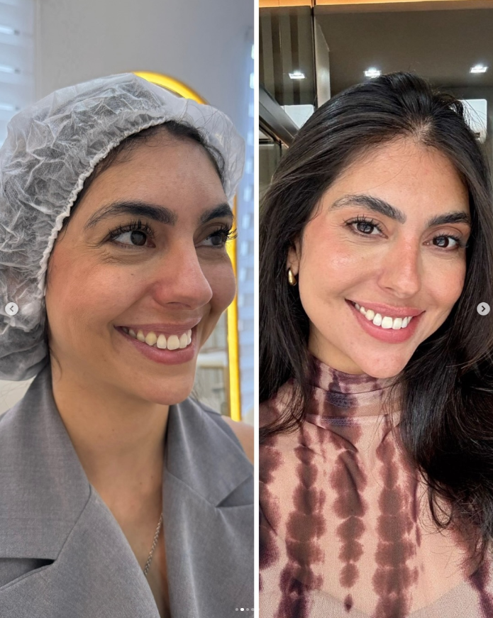
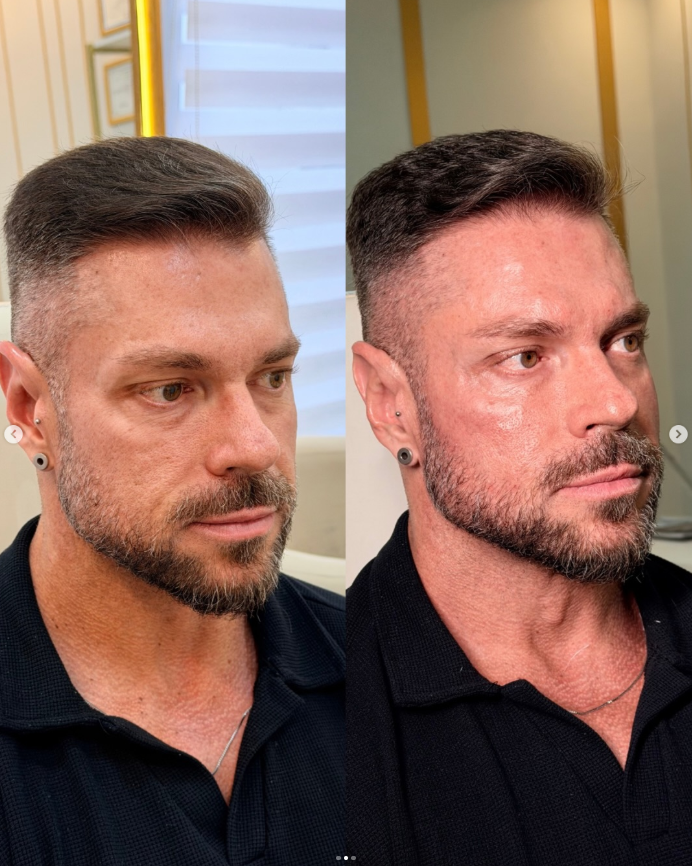
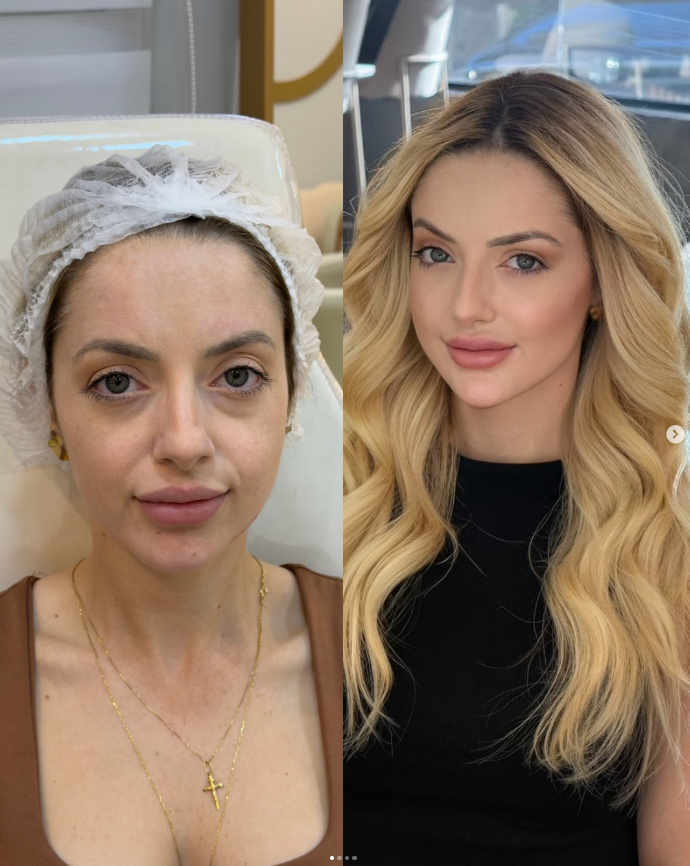

Harmonização Facial
Avaliação individualizada do rosto, com plano de tratamento construído em etapas.
Para quem quer se cuidar sem sair diferente de si mesma.
Conhecer →DRA. JAQUELINE CALISSE
Biomédica Esteta
Harmonização facial individualizada para valorizar quem você já é, não para criar outra pessoa.
Você não precisa parecer outra pessoa. Precisa continuar parecendo você.
Não é sobre mudar o rosto. É sobre compreender suas proporções, sua história e o que realmente incomoda, antes de decidir o que faz sentido tratar.
Quem cuida do seu rosto
Biomédica Esteta
CRBM-SP 27988 · Itu — SP
Não trabalho pensando em transformar rostos. Prefiro entender cada rosto, suas proporções, suas características, sua história, e a partir disso decidir o que realmente faz sentido tratar.
Porque o resultado que busco nunca é ouvir o que você fez? É ouvir você está tão bem, descansou?
Filosofia de atendimento
Cada rosto tem uma identidade. O trabalho aqui não é apagar isso. É entender o que está causando aquele aspecto de cansaço ou desalinho e tratar essa causa de forma individual.
Preservar aquilo que torna cada rosto único.
Tratar proporções e características que realmente incomodam.
Buscar um resultado natural, elegante e coerente com a pessoa.
Como funciona a avaliação
Entender o rosto, as proporções e aquilo que realmente incomoda.
Construir um plano individualizado, respeitando prioridades e possibilidades.
Acompanhar a evolução e ajustar o tratamento quando necessário.
Onde podemos começar
Avaliação individualizada do rosto, com plano de tratamento construído em etapas.
Para quem quer se cuidar sem sair diferente de si mesma.
Conhecer →Para suavizar linhas de expressão preservando a naturalidade dos movimentos.
Ideal para quem busca uma aparência mais descansada sem perder sua expressão.
Conhecer →Reestruturação de suporte facial na região do malar e das olheiras.
Para quem sente o rosto "caído" mesmo descansada.
Conhecer →Planejamento de contorno, volume e proporção para valorizar os lábios sem perder a naturalidade e a identidade do rosto.
Para quem quer lábios mais definidos, sem perder a proporção natural do rosto.
Conhecer →Transformações



No Google
2 avaliações no Google
Talita Lima"A Jaque é uma profissional maravilhosa! ❤️ Desde o primeiro atendimento, me senti muito acolhida e segura. Ela é extremamente atenciosa, cuidadosa e demonstra muito conhecimento no que faz. Além de ser uma excelente biomédica, é uma…"
Trecho disponibilizado publicamente pelo Google. O texto completo exige login no Google Maps.
Sirlei RossiAvaliação 5 estrelas, sem comentário escrito.
Uma avaliação individualizada é o primeiro passo para entender o que realmente faz sentido para o seu rosto.
Quero conversar no WhatsAppAtendimento em Itu — SP